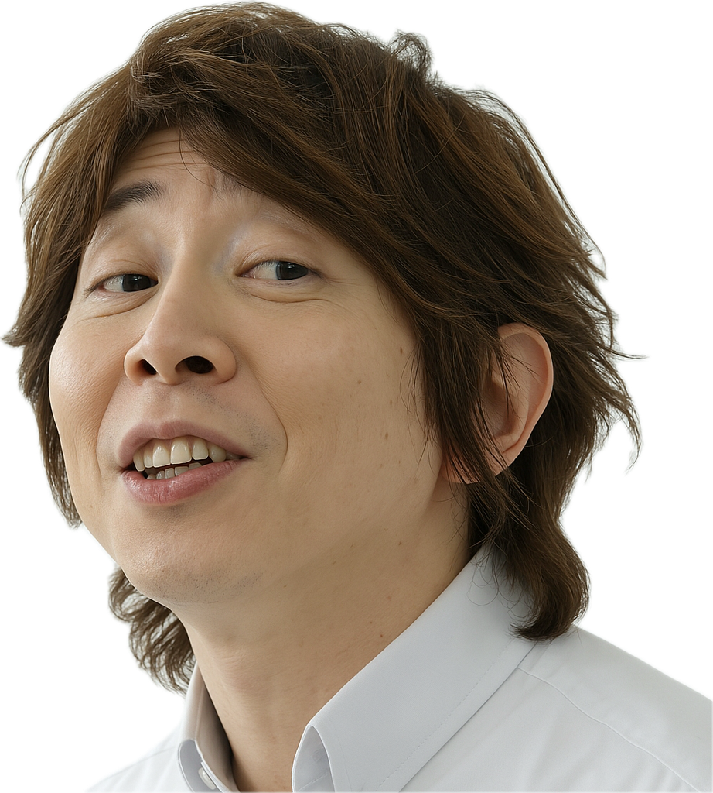

代表紹介
代表取締役 竹内 崚恭

1993年9月3日、広島市に生まれ、高校卒業後、辻調理師専門学校で料理の基礎を学びました。
その後、フランス・リヨン郊外のミシュラン一つ星レストラン「La Poularde」（現在は閉業）にて約1年間の修行を積み、
帰国後は国内外の有名フレンチレストランやクルーズ船で約6年間、料理人としての経験を重ねました。
27歳のとき、広島市中区胡町にて「料理屋フルニール」を開業。５期連続で黒字経営を達成し、 2024年には店舗拡大のため同地に移転。現在６期目です。
事業拡大を進める中、道路工事業を営む父親から、夏場の過酷な作業環境や熱中症リスクについて話を聞く機会がありました。 その後、テレビニュースで警察官がサングラスやネッククーラーを使用して暑さ対策をしている様子を見て、 現場で働く人々の安全と快適さを追求するため、警察官や現場作業員向けの冷却商品事業の必要性を感じ、2025年に新たな事業を立ち上げました。